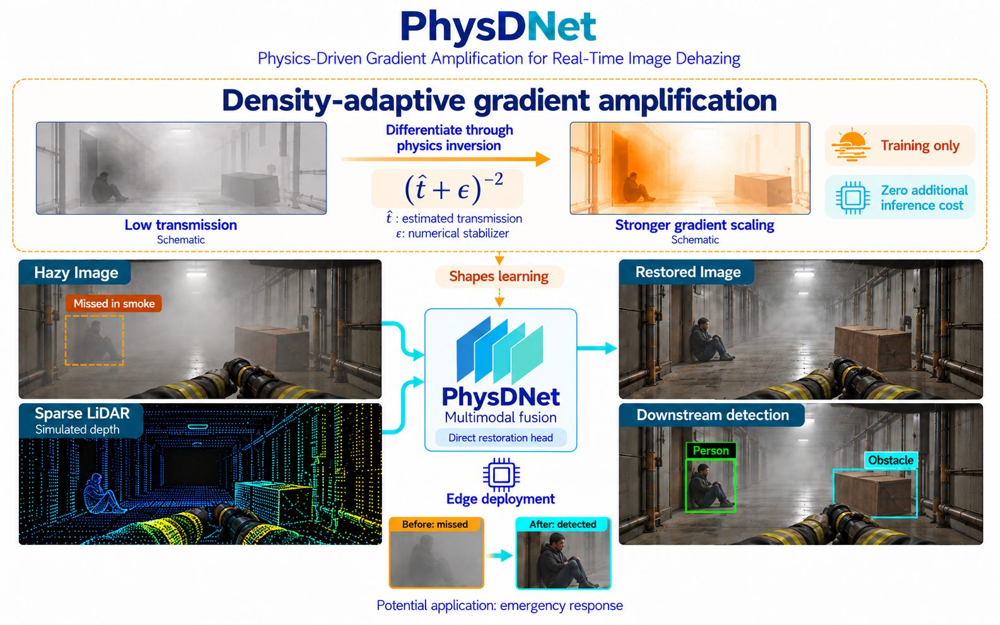

01 2026
PhysDNet: Physics-Driven Gradient Amplification for Real-Time Image Dehazing
A lightweight network fuses time-gated NIR imagery with sparse LiDAR. A physics-based auxiliary head amplifies gradients in regions of dense haze during training; only the direct restoration head is deployed.
The contribution
Use physical inversion to shape optimization, concentrating learning on degraded pixels while keeping the inference footprint unchanged.
- +1.67 dB
- PSNR vs. FFA-Net on Seeing Through Fog
- 5.2× lower
- Compute for the reported comparison
- 29–99 FPS
- L/M/S NPU variants, under 4 W
- 54.9%
- Fog-induced detection loss recovered


Architecture overview